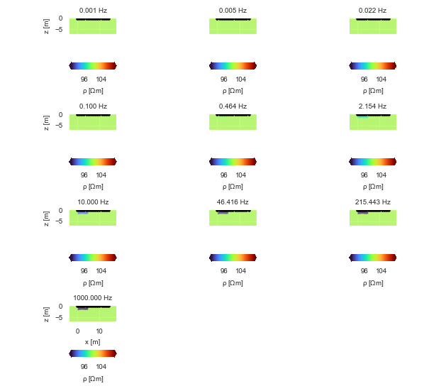
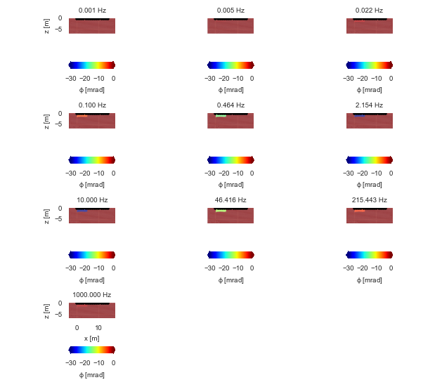
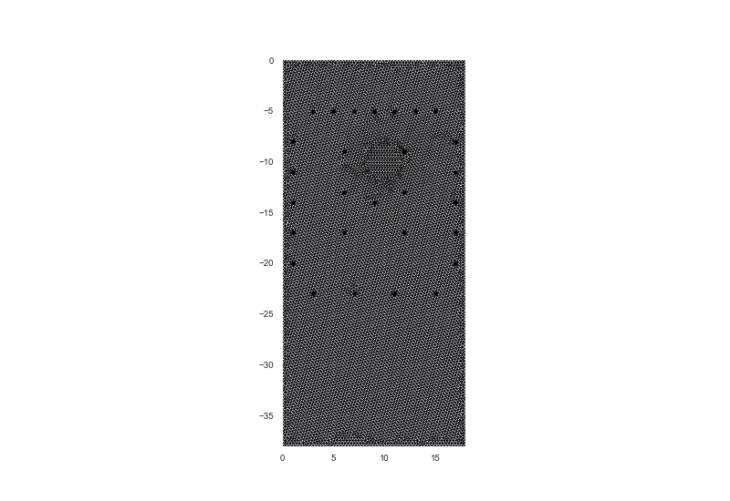
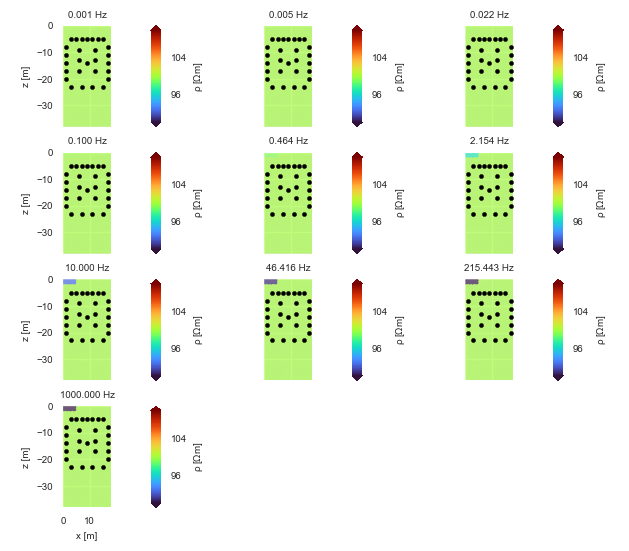
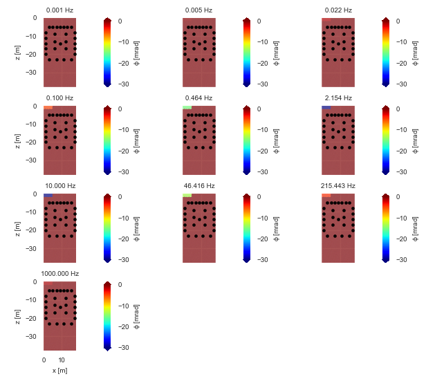

Note
Click here to download the full example code
Plot forward models
Test plotting forward models for different mesh boundaries.
imports
import numpy as np
import crtomo
set up plotting facilities - this will often generate better fitting plots
import crtomo.mpl
crtomo.mpl.setup()
a surface grid
grid = crtomo.crt_grid.create_surface_grid(nr_electrodes=15, spacing=1)
grid.plot_grid()
frequencies = np.logspace(-3, 3, 10)
eitman = crtomo.eitMan(frequencies=frequencies, grid=grid)
eitman.add_homogeneous_model(magnitude=100, phase=0)
eitman.set_area_to_single_colecole(
0, 5, -2, 0,
[100, 0.1, 0.04, 0.8]
)
r = eitman.plot_forward_models(maglim=[90, 110], phalim=[-30, 0])
# save to files
r['rpha']['fig'].savefig('fwd_model_par_rpha.png', dpi=300)



Out:
This grid was sorted using CutMcK. The nodes were resorted!
Triangular grid found
a rhizotron
grid = crtomo.crt_grid('grid_rhizotron/elem.dat', 'grid_rhizotron/elec.dat')
grid.plot_grid()
frequencies = np.logspace(-3, 3, 10)
eitman = crtomo.eitMan(frequencies=frequencies, grid=grid)
eitman.add_homogeneous_model(magnitude=100, phase=0)
eitman.set_area_to_single_colecole(
0, 5, -2, 0,
[100, 0.1, 0.04, 0.8]
)
r = eitman.plot_forward_models(maglim=[90, 110], phalim=[-30, 0])
# save to files
# r['rpha']['fig'].savefig('fwd_model_par_rpha.png', dpi=300)
# sphinx_gallery_thumbnail_number = -1



Out:
This grid was sorted using CutMcK. The nodes were resorted!
Triangular grid found
Total running time of the script: ( 0 minutes 21.620 seconds)